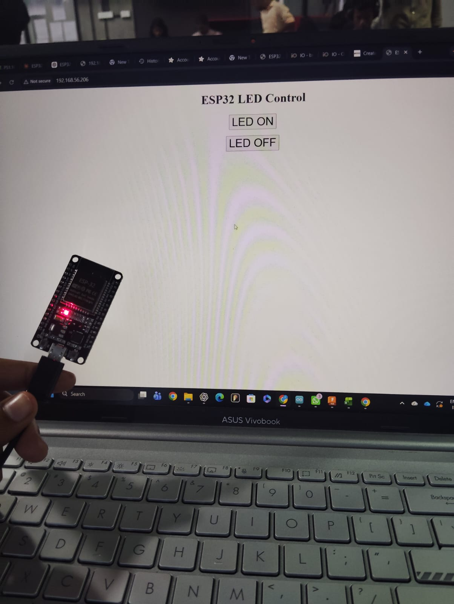

HARDWARE VERIFICATION & FIRMWARE
Task 1: On / Off Inbuilt LED on ESP32
The fundamental initialization step in microcontroller prototyping is verifying GPIO logic levels and register switching on the ESP32. In this task, I implemented digital output firmware to control the inbuilt blue indicator LED located on GPIO 2, incorporating both automated timing cycles and interactive Serial UART commands.
Hardware Configuration & Specifications
| Component | ESP32 Pin | Mode | Description |
|---|---|---|---|
| Onboard Blue LED | GPIO 2 | OUTPUT | Active HIGH digital state indicator |
| Serial Monitor | USB / UART0 (TX0/RX0) | 115200 Baud | Interactive command input & telemetry logging |
| Microcontroller | ESP32 DevKit V1 | 3.3V Logic | Dual-Core Tensilica Xtensa 32-bit LX6 |
Demonstration Video & Test Setup
🎥 Video: ESP32 Inbuilt LED Execution

📸 Photo: ESP32 Dev Board on Test Bench

📸 Photo: GPIO2 Onboard LED Active State
Arduino C++ Source Code
Firmware programmed in Arduino IDE for ESP32. Supports both autonomous blink mode and UART Serial command toggling (ON / OFF / TOGGLE).
ESP32_Inbuilt_LED_Control.ino
/*
* =====================================================================
* Task 1: On / Off Inbuilt LED on ESP32
* Developer: PRAVEEN. A
* Board: ESP32 DevKit V1
* Description: Control and toggle onboard LED connected to GPIO 2.
* =====================================================================
*/
// Define the inbuilt LED pin for ESP32 (GPIO 2)
#define LED_PIN 2
void setup() {
// Initialize serial communication at 115200 baud
Serial.begin(115200);
delay(500);
// Configure GPIO 2 as digital output
pinMode(LED_PIN, OUTPUT);
digitalWrite(LED_PIN, LOW); // Start in OFF state
Serial.println("=========================================");
Serial.println(" ESP32 INBUILT LED CONTROLLER ONLINE ");
Serial.println("=========================================");
Serial.println("Type 'ON', 'OFF', or 'TOGGLE' in Serial Monitor:");
}
void loop() {
// Check if serial command is available from user
if (Serial.available() > 0) {
String command = Serial.readStringUntil('\n');
command.trim();
command.toUpperCase();
if (command == "ON" || command == "1") {
digitalWrite(LED_PIN, HIGH);
Serial.println("[STATUS] Inbuilt LED: ON (GPIO 2 HIGH)");
}
else if (command == "OFF" || command == "0") {
digitalWrite(LED_PIN, LOW);
Serial.println("[STATUS] Inbuilt LED: OFF (GPIO 2 LOW)");
}
else if (command == "TOGGLE" || command == "T") {
int currentState = digitalRead(LED_PIN);
digitalWrite(LED_PIN, !currentState);
Serial.print("[STATUS] LED Toggled to: ");
Serial.println(!currentState ? "HIGH (ON)" : "LOW (OFF)");
}
else {
Serial.println("[ERROR] Unknown command. Use ON, OFF, or TOGGLE.");
}
}
// Heartbeat periodic blink cycle demonstration
digitalWrite(LED_PIN, HIGH);
delay(500);
digitalWrite(LED_PIN, LOW);
delay(500);
}